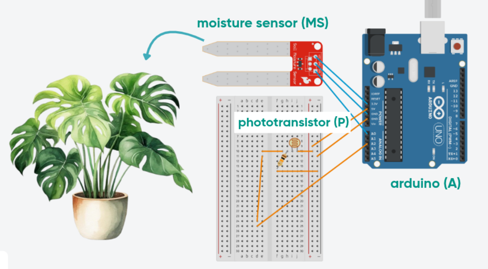

Last summer I tried gardening for the very first time. Armed with recycled
coffee cups and cheap soil, I germinated store-bought seeds, tracked frost
dates and planted the surviving seedlings in my small yard.
I quickly realized that plants showed different
personalities based on their care and
needs. Tomatoes and marigolds almost craved a bit of neglect, while basil
and roses would show me the middle leaf and dramatically wilt when the pH
level wasn’t just right.
If basil could have spoken, she would surely have been a cranky one,
always complaining about something! So when I came across the
voice AI hackathon
opportunity, I thought: why not use AI to make a sassy plant talk to me?
The Sassiest of Houseplants
Meet the one and only,
Lady Monstera Deliciosa! She is native to
the tropical forests of southern Mexico, and is also known as the “Swiss
cheese plant” due to the holes or “eyes,” that develop in her leaves,
resembling the holes in Emmental cheese.
With her dramatic and "cheesy" green leaves, it was easy to pick my
Monstera plant as the perfect
sassy talking plant!
Tech Details
In order to understand the plant's state at any point in time, I
connected a
phototransistor and a
soil moisture sensor to an Arduino. Here
are the schematics:

🟦
Fig. 1 - Arduino Setup
The moisture sensor (MS) connects the plant to the Arduino (A) via
a 3.3V voltage and outputs data on A0.
The phototransistor (P) connects to 5V on Arduino (A), 10 Ω
resistor. Data is read on the analog output A2.
The Arduino collects the sensors data and
sends it over to the back-end (a Python FastAPI application) via
asynchronous serial communication. The data is then processed and
displayed in React on the front-end. I used a combination of WebSockets
and Http for communication across the stack. I am fairly new to
WebSockets, so it was really cool
implementing a two-way street communication channel between back-end and
front-end.
I used GPT-4o by OpenAI to handle
text-to-speech (TTS) communication and give
Lady Monstera her voice.
From Sensors to Speech
Seeing the plant’s internal state read in real time was absolutely
thrilling! I tracked water and light changes over 5-second intervals, and
let the plant comment on significant state changes. Here is how Lady
Monstera recently handled an abrupt dimming of the lights:
And here is how she reacted to being watered!
Notice how she records and updates the last
time she was watered. Anything to remind you how sassy she is, and how she
won’t forgive you for forgetting to water her!
Reflections and Future Opportunities
I opted for
text-to-speech instead of realtime
speech. Realtime was very sensitive to ambient noise, difficult to
control and it quickly became too expensive to experiment with.
It would be fun to gamify the
experience, with multiple plants talking to each other, each with
distinct personalities based on their needs. Maybe even connect
hobbyist gardeners and let their plants gossip about their owners 🤭
Ultimately, I hope this project helps us get
closer to our house plants and the
nature around us, reduce house plant neglect and make interacting with
our green friends a little more entertaining and curiosity driven.
Thank You, Fellow Hackers!
Waterloo Voice AI hackathon
was my first ever real-world hackathon and I loved every minute of it.
Coding next to other hackers, exchanging ideas and simply absorbing the
energy and enthusiasm in the room has left an indelible mark on me. It has
given me the confidence to keep building, no matter how silly or small the
initial idea might seem.
As a rule of green thumb (yes, I am proud of this one 🙈), don't
leaf your plants unattended for too long. Also, singing to them
improves their greenery and promotes luscious, beat-loving leaves!